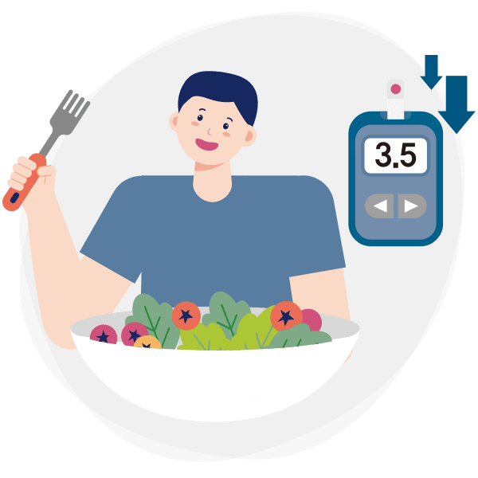

1
채식했더니 당뇨 유병률이
낮아졌다는 주장도 있습니다!
미국영양학회에 기재된 바에 따르면 채식을 한 사람의 당뇨병 유병률은 채식하지 않은 사람보다 49% 낮았습니다.

2
그러나 식물성 식품이 오히려
혈당을 높일 수 있다는 연구 결과도
있습니다.
영국 하트퍼드셔대 연구에 따르면 채식이 오히려 당뇨병을 유발하고, 심장병 위험까지 높인다고 합니다.
식물성 대체품에 함유된 전분이 몸 속에 들어가면 설탕으로 분해되는데, 채식을 하면 이를 과하게 섭취하게 되어 혈당 건강에 안 좋기 때문입니다.
3
그렇다면 당뇨 환자는
어떤 식단을 해야 할까요?
당뇨 환자의 건강한 혈당 관리를 위해서는 고기를 드셔야 합니다.
특히 양질의 단백질, 즉 살코기나 생선을 곁들인 채소 위주의 식단이 당뇨 환자에게 가장 좋습니다.
규칙적으로 적당한 양의 식사를 하는 것이 혈당 관리를 비롯해 신체 전반의 건강에 도움이 됩니다.
4
당뇨 환자들은
당뇨 식단이 어렵다고 말합니다.
실제 당뇨 환자의 혈당 조절률은 24.5%에 그치고 있습니다.
[출처 : 2020 국민건강통계 (대상: 당뇨 환자 1,117명)]
특히, 식단 관리는 당뇨 환자들에게 필수임에도 불구하고, 당뇨 환자의 76.2%는 불균형한 식사를 하고 있습니다.
[출처 : 삼성서울병원 당뇨병 센터 (대상: 당뇨 환자 1,466명)]
단답형으로 똑떨어지게 무엇을 먹고, 먹지 말아야 하는지 알면 좋겠지만 당뇨병의 식사요법은 그렇게 이분법적으로 나눌 수 없습니다.
그래서 실제 환자들은 당뇨병 식단이 복잡하다는 편견을 지닌 경우가 많습니다.
5
의사 선생님이 권하는
당뇨 환자 식사요법 알려드리겠습니다.
일정한 시간에 알맞은 음식을 규칙적으로 먹습니다.
지방을 적절히 섭취하되 콜레스테롤의 섭취는 제한합니다.
특별한 게 없어 보이시나요?
당뇨식은 건강식이기 때문입니다.
일상생활에서 식이요법과 운동요법으로 잘 관리하며 평생 안고 가야 하는 질병이 바로 당뇨입니다.